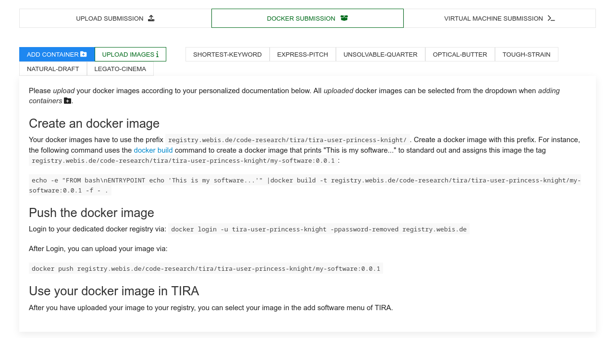
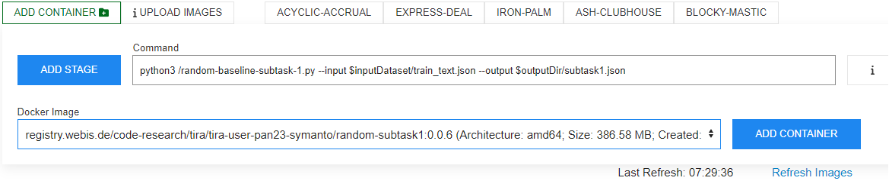
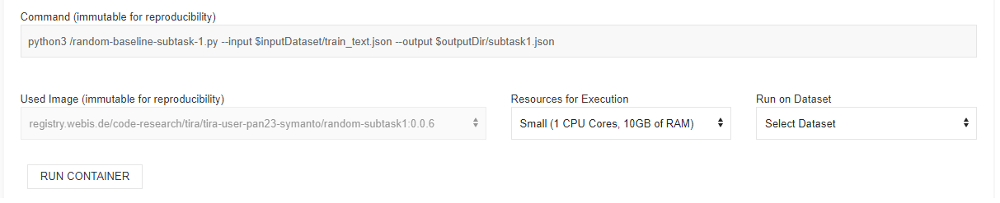
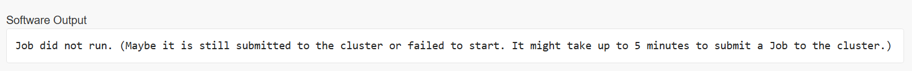

Profiling Cryptocurrency Influencers with Few-shot Learning
Synopsis
- Task: In this shared task we aim to profile cryptocurrency influencers in social media, from a low-resource perspective. Moreover, we propose to categorize other related aspects of the influencers, also using a low-resource setting. Specifically, we focus on English Twitter posts for three different sub-tasks:
- Low-resource influencer profiling (subtask1):
- Input [data]:
32 users per label with a maximum of 10 English tweets each.
Classes: (1) null, (2) nano, (3) micro, (4) macro, (5) mega
March 6, 2023 - Version 1.1 New dataset version is available.
- Oficial evaluation metric: Macro F1
- : TIRA
- Baselines: LDSE [18], User-character Logistic Regression; t5-large (bi-encoders) - zero shot [7], t5-large (label tuning) - few shot [7]
- Low-resource influencer interest identification (subtask2):
- Input [data]:
64 users per label with 1 English tweets each.
Classes: (1) technical information, (2) price update, (3) trading matters, (4) gaming, (5) other - Oficial evaluation metric: Macro F1
- Submission: TIRA
- Baselines: LDSE [18], User-character Logistic Regression; t5-large (bi-encoders) - zero shot [7], t5-large (label tuning) - few shot [7]
- Low-resource influencer intent identification (subtask3):
- Input [data]:
64 users per label with 1 English tweets each.
Classes: (1) subjective opinion, (2) financial information, (3) advertising, (4) announcement - Oficial evaluation metric: Macro F1
- Submission: TIRA
- Baselines: LDSE [18], User-character Logistic Regression; t5-large (bi-encoders) - zero shot [7], t5-large (label tuning) - few shot [7]
- Participations for independent tasks, both from machine and deep learning pespective, are welcome.
- A train-truth.json file with the list of authors and the ground truth.
Task
Data annotation for Natural Language Processing (NLP) is a challenging task. Aspects such as the economic and temporal cost,
the psychological and linguistic expertise needed by the annotator, and the congenital subjectivity involved in the annotation task,
makes it difficult to obtain large amounts of high quality data [1, 2].
Cryptocurrencies have massively increased their popularity in recent years [3].
Aspects such as not being reliant on any central authority, the possibilities offered by the different projects, and the new gold rush,
spread mainly by influencers, make this a very trendy topic in social media. However, in a real environment where, for instance,
traders may want to leverage social media signals to forecast the market, data collection is a challenge and real-time profiling needs
to be done in a few milliseconds, which implies to process as little data as possible.
Participants will be provided with little training data per task, and will need to choose carefully the models applied to this under-resource setting.
Concepts such as transfer learning [4] and few-shot learning [5,6,7,8] will be key to excel.
Award
tba.Data
Input
The dataset format is the same for each sub task. The uncompressed dataset consists in a folder which contains two JSON files:
{"twitter user id":"05ca545f2f700d0d5c916657251d010b","texts":[{"text":"I got $20 on Boston winning tonight, who trying to bet? \ud83d\udc40"},{"text":"Is there an alternative search engine besides Google? I hate when I search a question and the answer has absolutely nothing to do with the question"}],"tweet ids":[{"tweet id":"65408feeb147b509e4bc47280c062e16"},{"tweet id":"10a27a0fae34f8411a2ed3b0631db42d"}]}
{"twitter user id":"062492818c984febba843b650a4a602e","texts":[{"text":"@1inch, my favorite aggregator has a sweet booth this year, if you ignore the glare lol https:\/\/t.co\/BJdG60wpKR"},{"text":"Takes 2 $Matic or 100 $BANK on polygon. That's one of the lowest cost ways to now flex commitment to community, and value the work of your peers in so doing."}],"tweet ids":[{"tweet id":"841834bda2a5703a27a9e2a2e0e11471"},{"tweet id":"6539be1639225a7b362e71dba7dcf18a"}]}
{"twitter user id":"0003d5772f14b3147659f37b5aa4399e","class":"no influencer"}
{"twitter user id":"00230caa0289b84a7a077457435d26b8","class":"macro"}
Output
Participants software must take as input the absolute path to an unpacked dataset. The output JSON file looks like this:
{"twitter user id":"0003d5772f14b3147659f37b5aa4399e","class":"no influencer", "probability": 1.0}
{"twitter user id":"00230caa0289b84a7a077457435d26b8","class":"macro", "probability": 0.5}
The output file naming is up to participants. However, we recommend to use the "subtask-id" eg; "subtask1" as filename and "json" as extension.
Submission
We will accept run software submissions via [TIRA]. For software submissions, you upload docker images to TIRA that will be executed on the test data within the TIRA platform (using a single file as input to produce a single file as output in the format specified above).
We provide some random baselines for all the sub tasks those are available at the corresponding git repository .
TIRA Quickstart
Participants must upload a docker image containing the created/trained solution to be evaluated at TIRA. This image could be re-used in the future for different datasets using the same format. To upload your images, you can find the access credentials for your personal container registry under "Docker Submission":
Please follow the instructions there to upload your image. For instance, you can build the random baseline (more info about how to create a docker image and run baselines here) as follows:
docker build -t pan-profiling-cryptocurrency-baselines:subtask1-random-0.0.1 .
You can next login to your dedicated registry as follows:
docker login -u YOUR-USER-NAME -pTOKEN-PROVIDED-BY-TIRA registry.webis.de
Finally, you can upload your image by running:
docker push pan-profiling-cryptocurrency-baselines:subtask1-random-0.0.1
Note that your software is expected to receive two arguments:
- First, an input directory (named
$inputDatasetin TIRA). This input directory contains a input.json file that contains the input data. - Second, an output directory (named
$outputDirin TIRA). Your software should create its output in$outputDir/subtask1.json, where “subtask1” will be the corresponding one.
After you have uploaded your image, you can create different "command-image" configurations that use it. Each combination of a command and a docker image is called a "software" in TIRA. Add a software by selecting your image and specifying the command that should be executed inside the image. It must use the two aforementioned arguments. For instance, the command for the random baseline uploaded above is:
python3 /random-baseline-subtask-1.py --input $inputDataset/train_text.json --output $outputDir/subtask1.json
This will be displayed as follows:
After creating the docker software, a new tab for this software is added. You can run your software by specifying the needed hardware resources and the input dataset. For instance, you can evaluate and record your results for subtask1 using "pan23-profiling-cryptocurrency-influencers-subtask1-20230210-test". To just validate that your software works, you can evaluate on training "pan23-profiling-cryptocurrency-influencers-subtask1-20230210-training".
Note that sometimes fails due to workload and produces the error below. Please re-run your software after some minutes.
Once the run of your software completes, you can see the run and its evaluation (results hidden for the test partition):

Evaluation
The official evaluation metric is Macro F1. We will also analyse per-class accuracy, precision, recall and f-measure to show the participant performance regarding.
Results SubTask 1: Low-resource influencer profiling
| POS | Team | Macro-F1 |
|---|---|---|
| 1 | pan23-holo | 62.32 |
| 2 | pan23-terra-classic | 61.14 |
| 3 | pan23-stellar | 58.44 |
| 4 | MRL_LLP | 57.44 |
| 5 | pan23-magic | 57.14 |
| 6 | pan23-vechain | 55.51 |
| 7 | pan23-neo | 55.10 |
| 8 | pan23-waves | 55.06 |
| 9 | pan23-iota | 54.43 |
| 10 | pan23-hive | 52.94 |
| 11 | pan23-symbol | 52.31 |
| 12 | pan23-dogecoin | 50.80 |
| 13 | pan23-shiba-inu | 50.38 |
| 14 | Abhinav.Kumar | 50.21 |
| baseline - LDSE baseline - LDSE | 50.20 | |
| 15 | pan23-tron | 50.13 |
| baseline - t5-large (label tuning) - few shot | 49.34 | |
| 16 | pan23-api3 | 49.18 |
| 17 | pan23-terra | 48.74 |
| 18 | pan23-harmony | 47.93 |
| 19 | pan23-ethereum | 46.68 |
| 20 | pan23-sushiswap | 46.64 |
| 21 | pan23-alchemy-pay | 38.51 |
| 22 | pan23-nexo | 38.34 |
| 23 | Dr. H L. Shashirekha | 37.92 |
| 24 | pan23-wax | 37.62 |
| baseline - User-character Logistic Regression | 35.25 | |
| 25 | pan23-core | 34.76 |
| 26 | pan23-solana | 15.92 |
| baseline - random | 15.92 | |
| 27 | pan23-icon | 12.89 |
| baseline - t5-large (bi-encoders) - zero shot | 12.76 |
Results SubTask 2:Low-resource influencer interest identification
| POS | Team | Macro-F1 |
|---|---|---|
| 1 | pan23-stellar | 67.12 |
| 2 | pan23-iota | 64.55 |
| 3 | pan23-terra-classic | 63.15 |
| 4 | MRL_LLP | 62.00 |
| 5 | pan23-neo | 61.63 |
| 6 | pan23-symbol | 61.21 |
| 7 | pan23-vechain | 60.16 |
| 8 | pan23-shiba-inu | 58.47 |
| 9 | pan23-holo | 57.50 |
| t5-large (label tuning) - few shot | 56.48 | |
| 10 | pan23-magic | 55.68 |
| 11 | pan23-harmony | 54.41 |
| User-character Logistic Regression | 52.95 | |
| 12 | pan23-dogecoin | 51.72 |
| 13 | pan23-hive | 51.48 |
| 14 | pan23-tron | 49.77 |
| 15 | Dr. H L. Shashirekha | 46.66 |
| 16 | pan23-api3 | 46.07 |
| LDSE | 44.92 | |
| 17 | pan23-terra | 44.60 |
| 18 | pan23-core | 43.47 |
| 19 | pan23-waves | 42.35 |
| t5-large (bi-encoders) - zero shot | 33.34 | |
| baseline - random | 20.81 | |
| 20 | pan23-sushiswap | 19.23 |
Results SubTask 3: Low-resource influencer intent identification
| POS | Team | Macro-F1 |
|---|---|---|
| 1 | pan23-terra-classic | 67.46 |
| 2 | pan23-shiba-inu | 66.15 |
| 3 | pan23-symbol | 65.83 |
| 4 | MRL_LLP | 65.74 |
| 5 | pan23-stellar | 64.46 |
| 6 | pan23-api3 | 63.12 |
| 7 | pan23-holo | 61.81 |
| 8 | pan23-magic | 61.62 |
| 9 | pan23-vechain | 60.28 |
| User-character Logistic Regression | 60.21 | |
| t5-large (label tuning) - few shot | 59.91 | |
| 10 | pan23-hive | 59.08 |
| 11 | pan23-neo | 57.62 |
| 12 | pan23-ethereum | 55.94 |
| 13 | pan23-core | 55.34 |
| 14 | pan23-terra | 54.83 |
| 15 | pan23-tron | 53.43 |
| 16 | pan23-dogecoin | 52.59 |
| LDSE | 51.96 | |
| 17 | pan23-iota | 50.62 |
| 18 | Dr. H L. Shashirekha | 50.42 |
| 19 | pan23-waves | 49.21 |
| 20 | pan23-harmony | 45.83 |
| t5-large (bi-encoders) - zero shot | 32.71 | |
| 21 | pan23-sushiswap | 22.58 |
| baseline - random | 18.41 |
Related Work
- [1] Victoria Bobicev, Marina Sokolova. Inter-annotator agreement in sentiment analysis: Machine learning perspective. In: INCOMA Ltd, 2017
- [2] Enrica Troiano, Sebastian Padó, Roman Klinger. Emotion ratings: How intensity, annotation confidence and agreements are entangled. In: arXiv preprint arXiv:2103.01667. 2021
- [3] Ramit Sawhney, Shivam Agarwal, Vivek Mittal, Paolo Rosso, Vikram Nanda, Sudheer Chava. Cryptocurrency Bubble Detection: A New Stock Market Dataset, Financial Task & Hyperbolic Models In: NAACL, 2022
- [4]Karl Weiss, Taghi Khoshgoftaar, DingDing Wang, . A survey of transfer learning. In: Journal of Big data, vol. 3, pp. 1-40, 2016
- [5] Mara Chinea-Rios, Thomas Müller, Gretel Liz De La Peña Sarracén, Francisco Rangel, Marc Franco-Salvador. Zero and Few-Shot Learning for Author Profiling In: NLDB, pp. 333--344, 2022
- [6] Thomas Müller, Guillermo Pérez-Torró, Angelo Basile, Marc Franco-Salvador. Active Few-Shot Learning with FASL In: NLDB, pp. 323--333, 2022
- [7] Thomas Müller, Guillermo Pérez-Torró, Marc Franco-Salvador. Few-Shot Learning with Siamese Networks and Label Tuning In: ACL, pp. 8532--8545, 2022
- [8] Yaqing Wang, Quanming Yao, James T Kwok, Lionel M Ni. Generalizing from a few examples: A survey on few-shot learning In: ACM computing surveys, vol. 53, pp. 1--34, 2020
- [9] Francisco Rangel, Gretel Liz De La Peña Sarracén, Berta Chulvi, Elisabetta Fersini, Paolo Rosso. Profiling Hate Speech Spreaders on Twitter Task at PAN 2021. In: CLEF 2021 Labs and Workshops, Notebook Papers, CEUR-WS.org, vol. 2936, pp. 1772-1789
- [10] Francisco Rangel, Anastasia Giachanou, Bilal Ghanem, Paolo Rosso. Overview of the 8th Author Profiling Task at PAN 2020: Profiling Fake News Spreaders on Twitter. In: CLEF 2020 Labs and Workshops, Notebook Papers. CEUR Workshop Proceedings.CEUR-WS.org, vol. 2696
- [11] Francisco Rangel and Paolo Rosso. Overview of the 7th Author Profiling Task at PAN 2019: Bots and Gender Profiling in Twitter. In: CLEF 2019 Labs and Workshops, Notebook Papers. CEUR Workshop Proceedings.CEUR-WS.org, vol. 2380
- [12] Francisco Rangel, Paolo Rosso, Martin Potthast, Benno Stein. Overview of the 6th author profiling task at pan 2018: multimodal gender identification in Twitter. In: CLEF 2018 Labs and Workshops, Notebook Papers. CEUR Workshop Proceedings. CEUR-WS.org, vol. 2125.
- [13] Francisco Rangel, Paolo Rosso, Martin Potthast, Benno Stein. Overview of the 5th Author Profiling Task at PAN 2017: Gender and Language Variety Identification in Twitter. In: Cappellato L., Ferro N., Goeuriot L, Mandl T. (Eds.) CLEF 2017 Labs and Workshops, Notebook Papers. CEUR Workshop Proceedings. CEUR-WS.org, vol. 1866.
- [14] Francisco Rangel, Paolo Rosso, Ben Verhoeven, Walter Daelemans, Martin Pottast, Benno Stein. Overview of the 4th Author Profiling Task at PAN 2016: Cross-Genre Evaluations. In: CLEF 2016 Labs and Workshops, Notebook Papers. CEUR Workshop Proceedings. CEUR-WS.org, vol. 1609, pp. 750-784
- [15] Francisco Rangel, Fabio Celli, Paolo Rosso, Martin Pottast, Benno Stein, Walter Daelemans. Overview of the 3rd Author Profiling Task at PAN 2015.In: CLEF 2015 Labs and Workshops, Notebook Papers. CEUR Workshop Proceedings. pp. 1-8
- [16] Francisco Rangel, Paolo Rosso, Irina Chugur, Martin Potthast, Martin Trenkmann, Benno Stein, Ben Verhoeven, Walter Daelemans. Overview of the 2nd Author Profiling Task at PAN 2014. In: Cappellato L., Ferro N., Halvey M., Kraaij W. (Eds.) CLEF 2014 Labs and Workshops, Notebook Papers. CEUR-WS.org, vol. 1180, pp. 898-827.
- [17] Francisco Rangel, Paolo Rosso, Moshe Koppel, Efstatios Stamatatos, Giacomo Inches. Overview of the Author Profiling Task at PAN 2013. In: Forner P., Navigli R., Tufis D. (Eds.)Notebook Papers of CLEF 2013 LABs and Workshops. CEUR-WS.org, vol. 1179
- [18] Francisco Rangel, Marc Franco-Salvador, Paolo Rosso A Low Dimensionality Representation for Language Variety Identification. In: Postproc. 17th Int. Conf. on Comput. Linguistics and Intelligent Text Processing, CICLing-2016, Springer-Verlag, Revised Selected Papers, Part II, LNCS(9624), pp. 156-169 (arXiv:1705.10754)
- [19] Reynier Ortega-Bueno, Berta Chulvi, Francisco Rangel, Paolo Rosso, Elisabetta Fersini A Profiling Irony and stereotype spreaders on Twitter (IROSTEREO) at PAN 2022 In: CLEF 2022 Labs and Workshops, Notebook Papers, CEUR-WS.org, vol. 3180, pp. 2314-2343